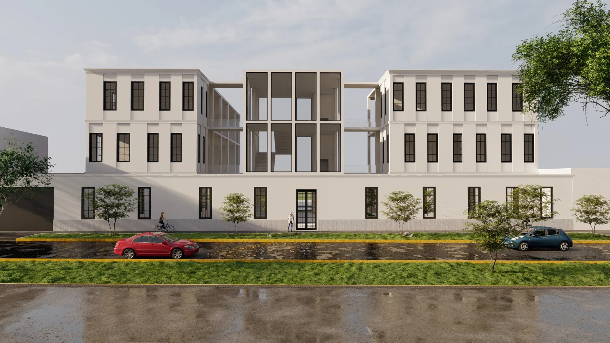
Taller 5 · UPN · Cultura
Centro cultural en el Rímac
Obra nueva en la Zona Monumental del Rímac. Las reglas de ProLima y del Ministerio de Cultura definieron el ritmo de la fachada, la altura y los materiales.
- Lugar
- Zona Monumental del Rímac, Lima
- Normativa
- ProLima y Ministerio de Cultura
- Niveles
- Sótano y 3 niveles
- Curso
- Taller 5 · UPN
- Programa
- Cine, talleres, salas de exposición, mediateca, SUM y estacionamiento
Contexto y normativa
Diseñar en la Zona Monumental
En obra nueva la norma no permite imitar estilos antiguos, pero exige que el edificio se integre con lo que ya existe.
El proyecto parte de cinco reglas de la zona: el ritmo de los vanos, su proporción vertical, el orden de zócalo, cuerpo y remate, la fachada sin retiro y una paleta de colores acorde.
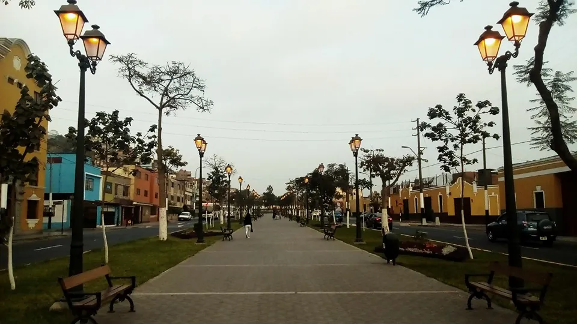
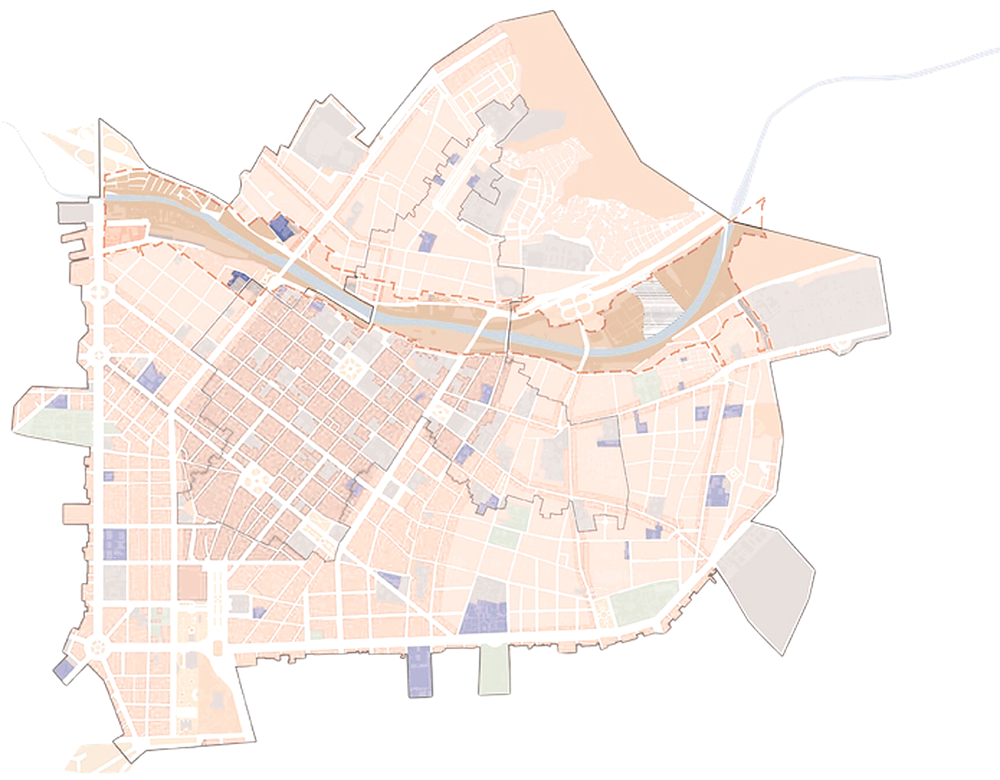
Área de estudioEn la Zona Monumental del Rímac
El círculo marca el área de estudio, cerca del río. Todo este sector es patrimonio protegido: ahí rigen las reglas de ProLima y del Ministerio de Cultura que ordenaron el proyecto.
- Área de estudio
- Río Rímac
- Manzanas del distrito
Estrategia
Cuatro decisiones, en orden
Primero la altura de la calle, luego el frente, la continuidad de la fachada y, al final, los vacíos. Elige un paso para ver su diagrama.
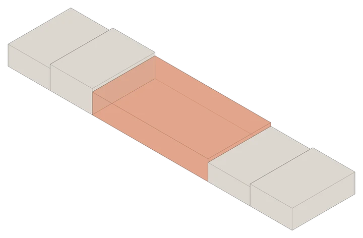
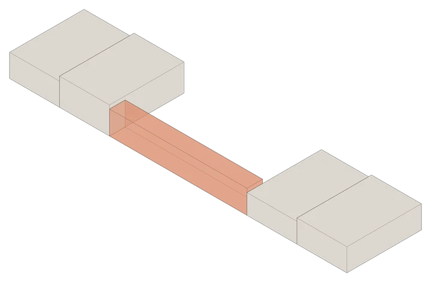
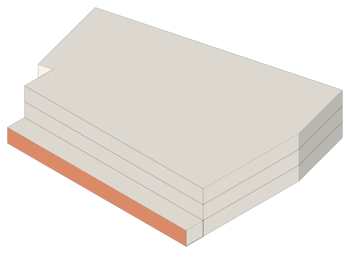
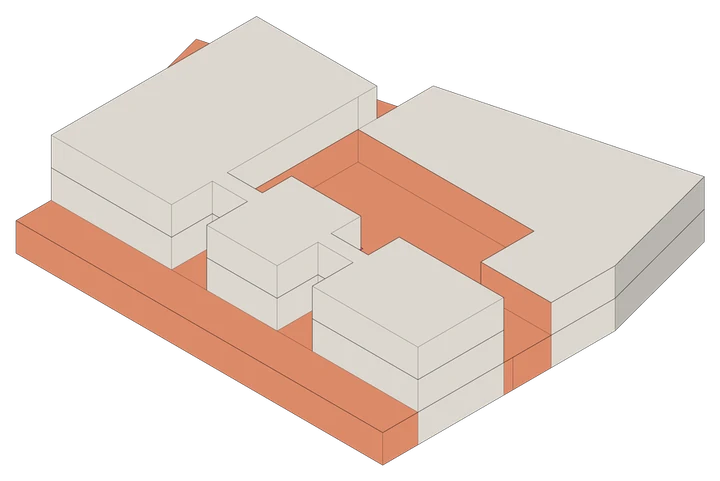
Renders
Hacia la calle y hacia adentro
Hacia la calle, ventanas verticales con el ritmo de las casonas vecinas. Hacia adentro, patios y dobles alturas que iluminan los talleres y el auditorio.
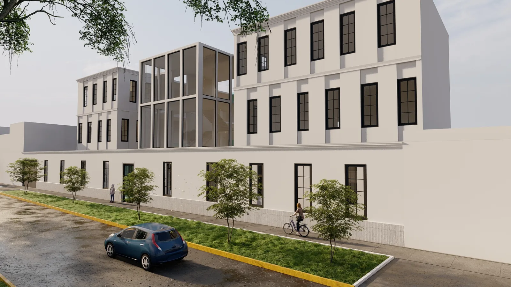
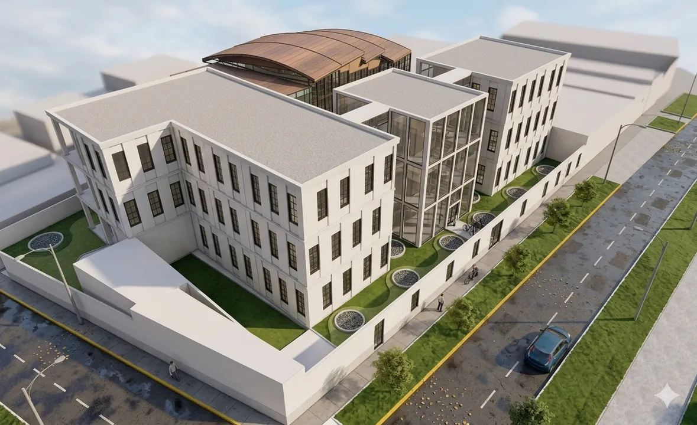
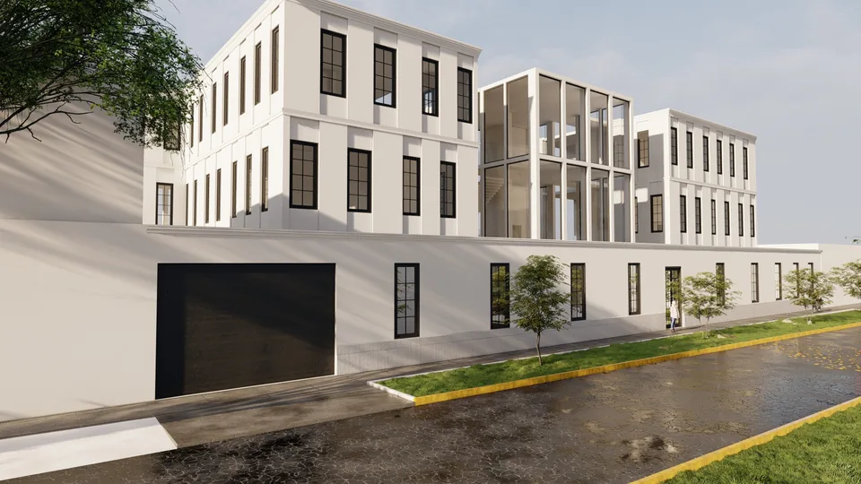
Planos
Plantas, cortes y elevación
Láminas completas, con ejes y niveles. En las plantas, el color separa las zonas del programa.
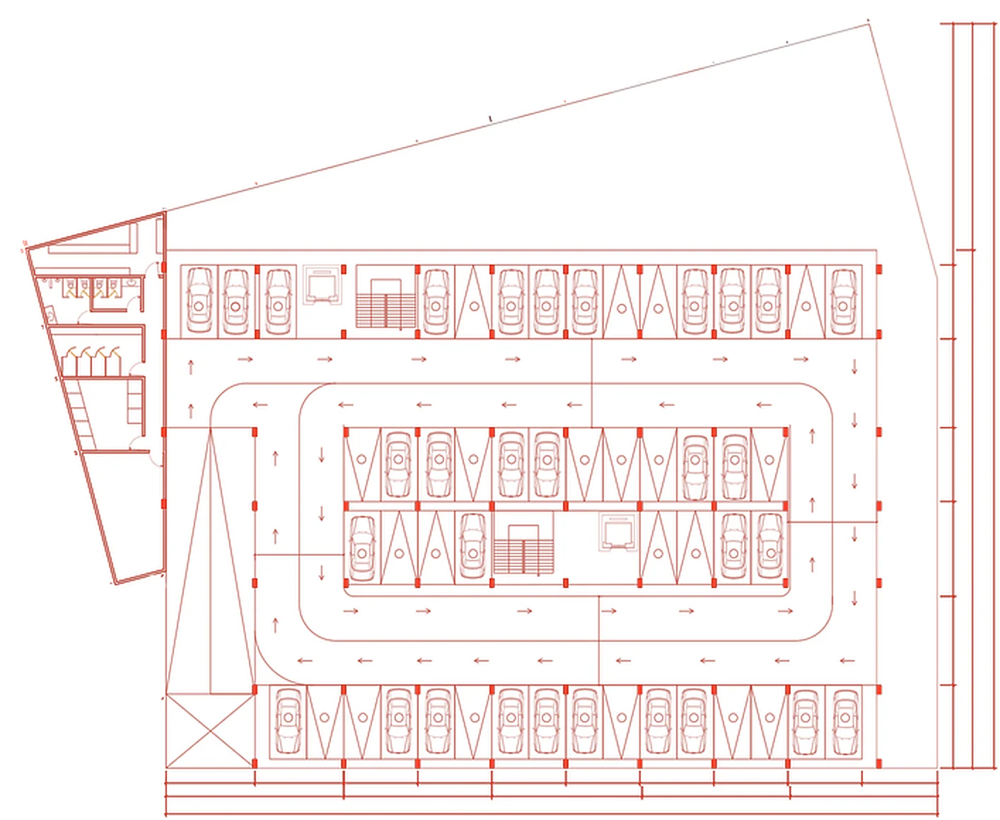
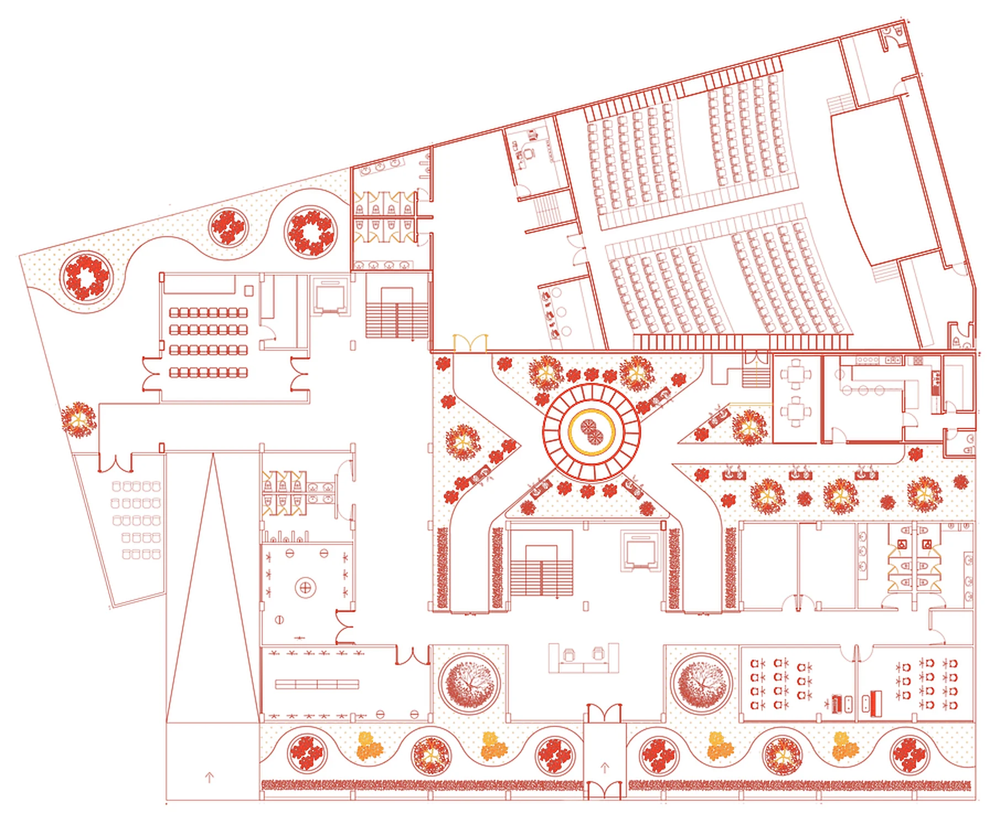
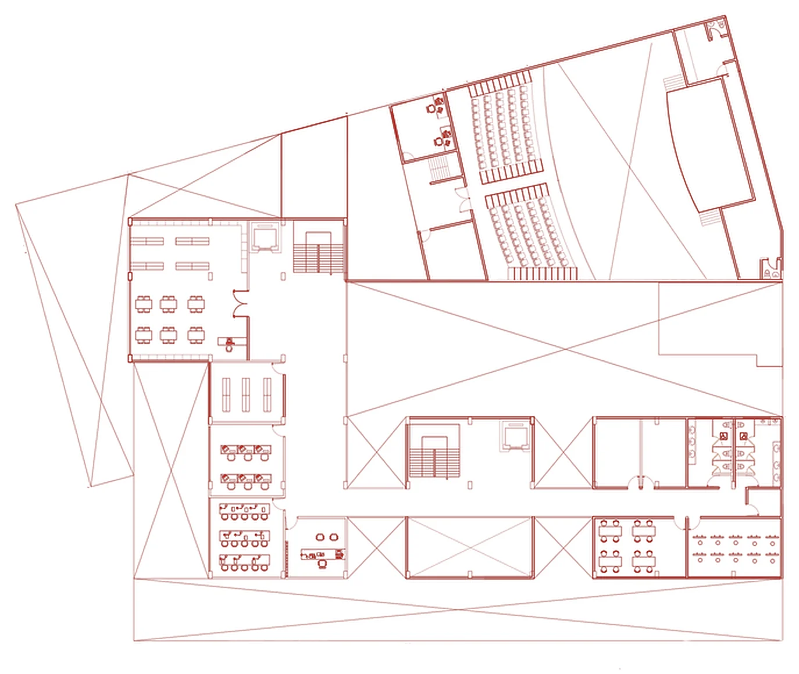
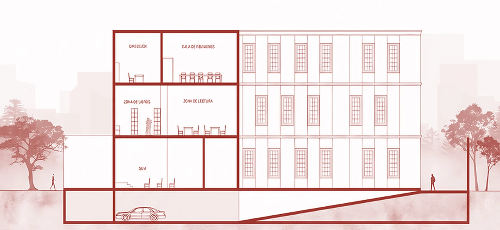
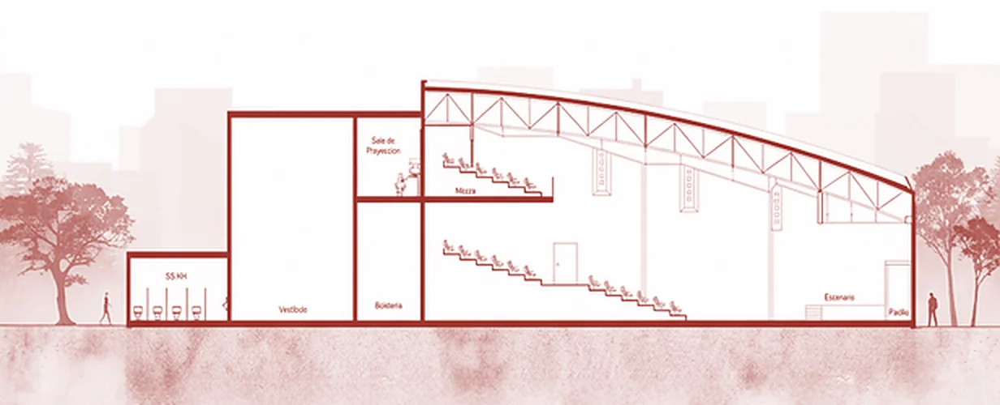
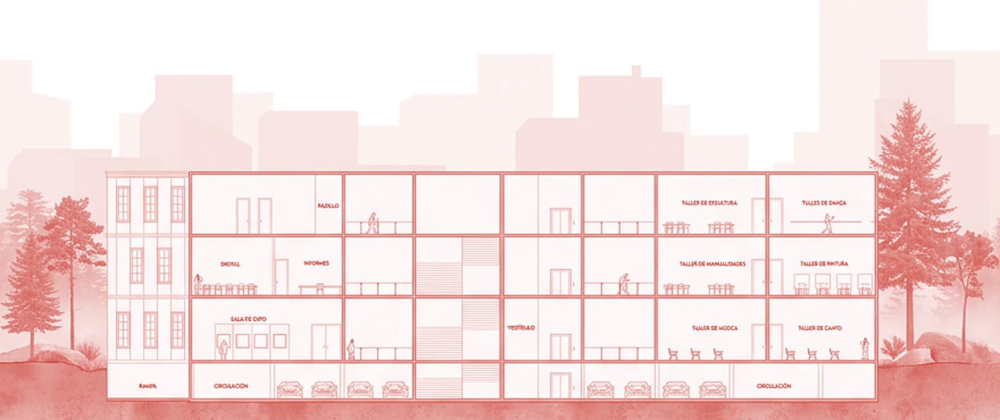
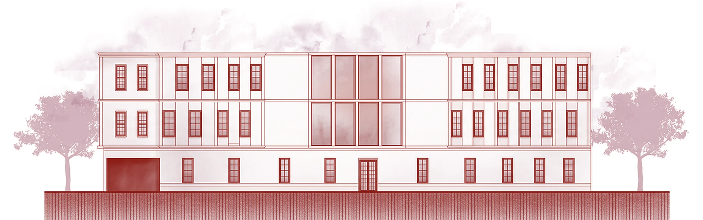